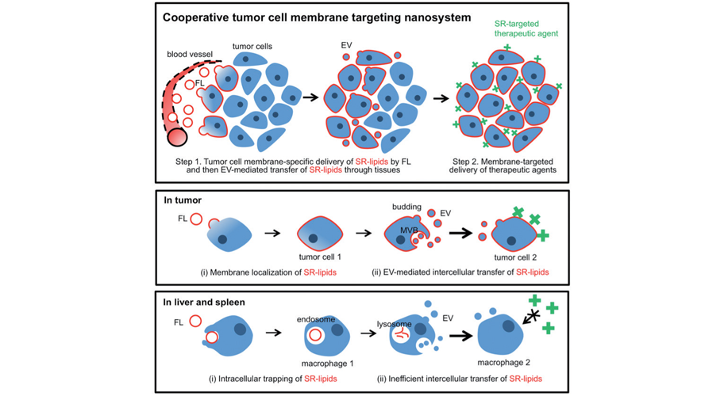

주제별 연구성과
주제별 연구성과
KAIST RESEARCH ACHIEVEMENTS
종양 내 인공수용체 전달을
통한 종양 표적치료기술
바이오 및 뇌공학과 박지호
요약
종양 표적치료란 일반적으로 종양의 성장, 발생에 관여하는 특정 분자를 표적하여 종양의 성장을 저해하는 치료를 일컫는다. 하지만 표적치료는 표적이 있는 환자에게만 효과가 있으며 표적이 소량으로 존재하거나 불균질하게 존재할 경우 치료효과가 제한된다. 본 연구에서는 이와 같은 문제해결을 위해 리포좀이라는 인공나노소포체와 세포로부터 자연적으로 분비되는 세포외 소포체라는 생체나노소포체를 이용하여 종양 내 모든 위치로 인공수용체를 전달할 수 있는 기술을 개발하였다. 이 기술은 표적치료가 어려운 다양한 종양을 치료하는데 유용하게 사용될 수 있을 것으로 기대된다.
연구배경
종양 표적치료란 일반적으로 종양의 성장, 발생에 관여하는 특정 분자를 표적하여 종양의 성장을 저해하는 치료를 일컫는다. 하지만 표적치료는 표적이 있는 환자에게만 효과가 있으며 표적이 소량으로 존재하거나 불균질하게 존재할 경우 치료효과가 제한된다.
종양세포에서 분비되는 세포외 소포체(extracellular vesicle)는 생체기원 나노소포체로서 모세포의 인지질, 단백질, RNA 등을 내포하고 있고, 이러한 생물학적 물질들을 주변 세포 및 특정 세포로 이동시키는 기능을 한다고 알려져 있다. 따라서 여기에 효율적으로 표적 가능한 인공수용체를 탑재할 수 있다면 종양 세포의 신호전달 체계를 따라 종양의 심부까지 인공수용체를 전달할 수 있을 것이다.

연구내용
먼저 인공수용체가 종양세포에서 분비되는 세포외 소포에 효율적으로 탑재되게 하기 위해서, 세포막과 효율적으로 결합하는 인공나노소포체인 세포막 결합성 리포좀을 개발하였다. 리포좀이란 세포막을 구성하고 있는 인지질과 콜레스테롤을 이용하여 인위적으로 만든 인공나노소포체이다. 리포좀의 막은 인지질 이중층으로 구성되어 있어서 그 막에 물에 잘 녹지 않는 약물들이 탑재될 수 있고, 리포좀의 내부는 물로 채워서 있어서 그 내부에는 물이 잘 녹는 약물들이 탑재될 수 있다고 알려져 있다. 본 연구에서는 리포좀의 구성 성분인 리피드에 바이오틴(biotin) 분자를 결합시켜 인공수용체로써 기능하도록 하였다. 먼저, 세포배양 환경에서 인공 수용체를 함유한 리포좀을 세포에 처리하여 주었을 때 세포막에 효과적으로 인공 수용체가 전달 되었으며 스트렙트아비딘(streptavidin)을 이용하여 표적 가능한 것을 확인하였다. 또한, 리포좀이 전달된 세포로부터 분비된 세포외 소포체를 수집 하여 다른 세포에 처리해 주었을 때, 세포들이 표적 가능한 것을 확인하였다. 결과적으로 세포간 인공수용체 전달이 세포외 수포에 의해서 매개됨을 확인 하였다. 나아가 암이 이식된 동물모델에서 혈류를 통하여 인공 수용체가 탑재된 세포막결합성 리포좀을 종양에 전달하였을 때, 인공수용체가 종양으로 잘 전달되고 시간이 지남에 따라 조직 내에서 균질하게 분포하고 있는 것을 관찰 하였다. 인공수용체가 균질하게 퍼진 후에 이를 표적하였을 때 인공 수용체를 전달하지 않은 그룹에 비하여 종양 표적이 크게 향상된 것을 확인하였다. 마지막으로 치료효과를 보기 위하여 암이 이식된 동물 모델에서 혈류를 통한 리포좀 주입으로 인공수용체를 종양으로 전달해 주었다. 이후 이를 표적할 수 있는 분자에 빛에 반응해 치료효과를 내는 광과민제를 결합하여 주입한 후 종양 부위에 빛을 조사하였을 때, 효과적으로 표적치료가 일어남을 확인하였다.일반적으로 암 표적치료란 암세포에 특이적으로 많이 나타나는 특정 단백질이나 특정 유전자 변화를 표적으로 암의 성장과 발생에 연관되는 신호를 차단함으로써 암세포를 특이적으로 죽일 수 있는 표적항암제를 일컫는다. 표적치료를 위해서는 먼저 조직검사로 떼어낸 종양의 특성을 파악해야 하며 종양이 가진 정보를 분석하여 그 종양만이 가진 특징을 찾아내야 한다. 이후 그 특징을 표적할 수 있는 약물을 투여한다. 하지만 표적이 없는 상태라면 표적치료제를 사용하여도 치료효과를 기대할 수 없게 된다. 본 연구에서는 종양이 자연적으로 갖고있는 표적이 아닌 인공수용체를 전달함으로써 암의 종류와 상관없이 효과적으로 표적 가능한 기술을 개발한 것이라고 할 수 있다.
기대효과
- 본 연구는 인공나노소포체인 리포좀을 이용하여 종양 미세환경에서 종양세포들이 분비하는 생체나노소포체인 세포외 소포체에 효율적으로 인공수용체를 탑재할 수 있게 하여, 소포체의 고유 이동경로를 통해 인공수용체가 종양 전역으로 전달될 수 있음을 밝힘으로써 표적이 어렵거나 불가능한 종양 표적치료를 하는데 유용하게 사용될 수 있을 것으로 기대된다.
연구성과
[논문] “Cooperative Tumor Cell Membrane Targeted Phototherapy” Heegon Kim, Junsung Lee, Chanhee Oh, and Ji-Ho Park, Nature Communications (2017) 15880
[홍보] YTN 뉴스 (종양만 공격하는 표적치료 효과 높인 기술 개발), 매일경제 ([Science &] 암세포 밥줄을 끊어라..진화하는 항암치료), 연합뉴스 (“종양 표적치료” 적용 대상 늘린다... 신기술 개발), 아시아투데이 (박지호 KAIST 교수, 암세포 전체 표적치료 기술 개발)